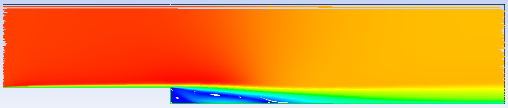
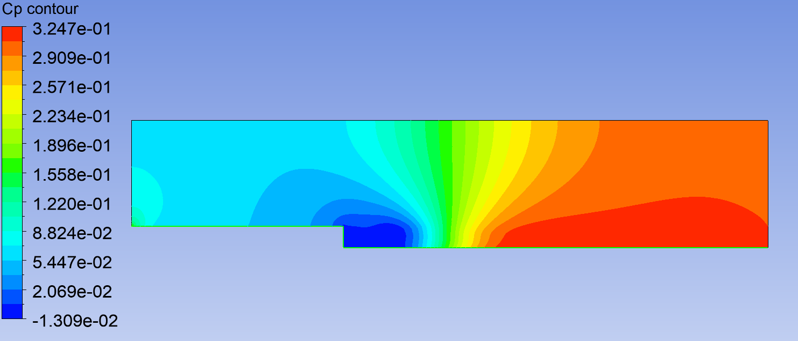
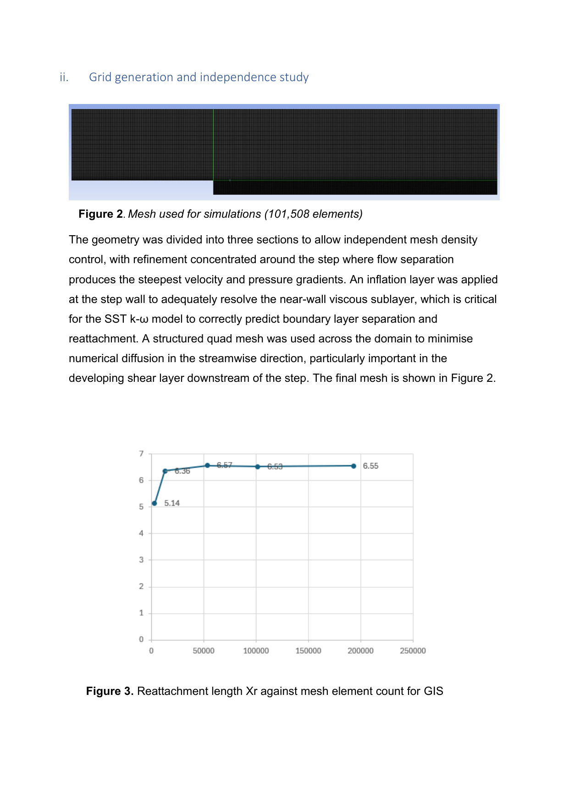
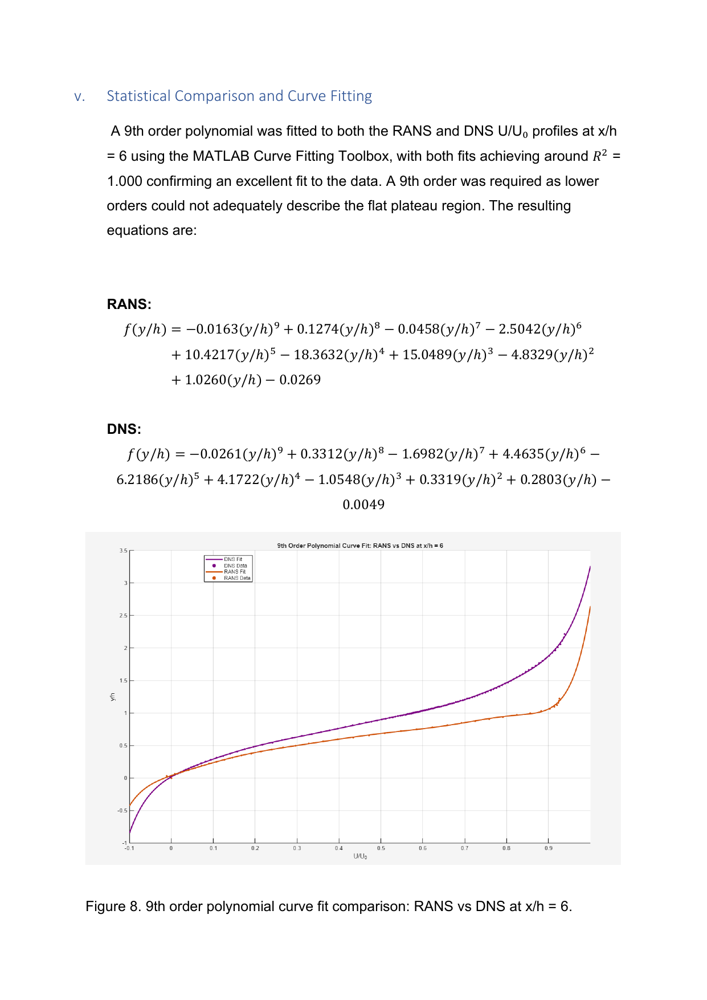
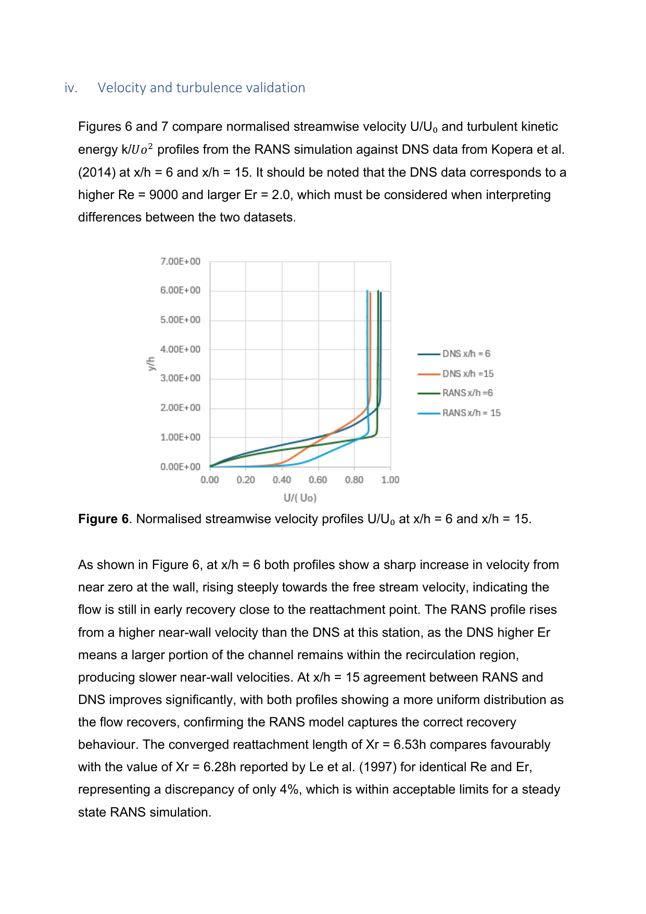
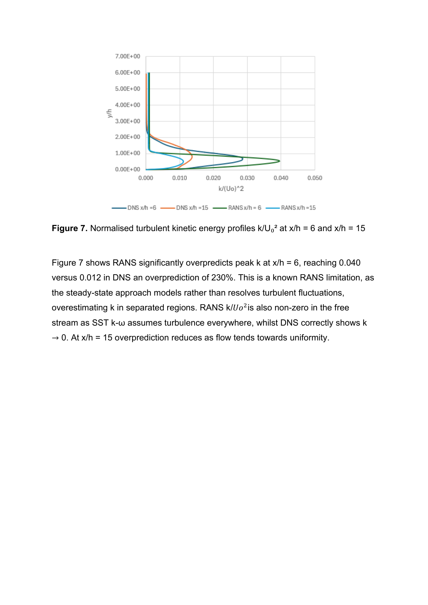
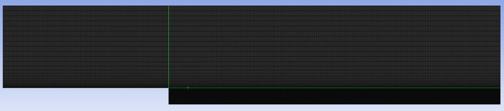

Steady-state CFD simulation of turbulent separated and reattaching flow at Re = 5100, expansion ratio 1.2. Validated against the DNS benchmark of Le et al. (1997) across a five-mesh grid independence study.






